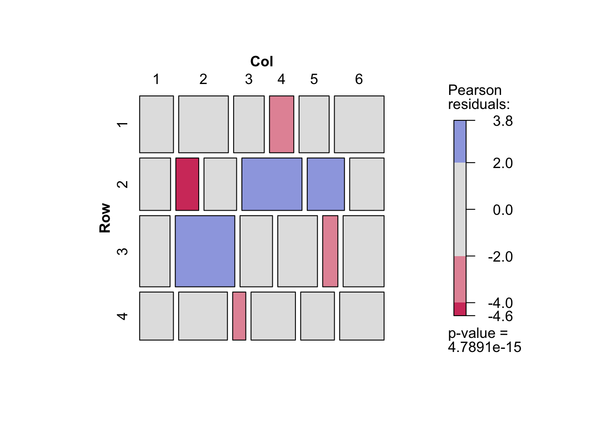
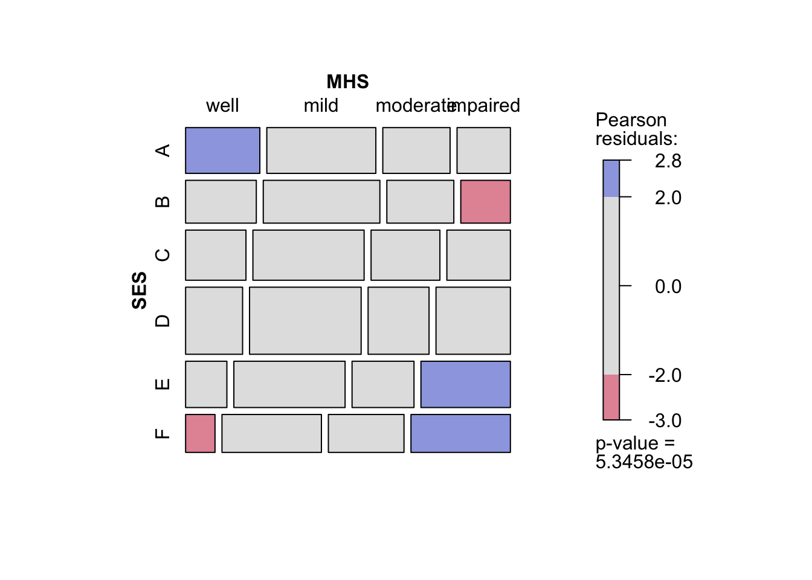

library(tidyverse)
library(magrittr)
library(gnm)
library(vcd)補足のノート
パッケージ
クロス表の作成
Freq <- c( 64, 94, 58, 46,
57, 94, 54, 40,
57, 105, 65, 60,
72, 141, 77, 94,
36, 97, 54, 78,
21, 71, 54, 71)
# byrow = TRUEとすることを忘れずに．
tab <- matrix(Freq, nrow = 6, ncol = 4, byrow = TRUE) %>% as.table()
dimnames(tab)[[1]]
[1] "A" "B" "C" "D" "E" "F"
[[2]]
[1] "A" "B" "C" "D"dimnames(tab) <- list(SES = LETTERS[1:6],
MHS = c("well", "mild", "modelrate", "impared"))
tab MHS
SES well mild modelrate impared
A 64 94 58 46
B 57 94 54 40
C 57 105 65 60
D 72 141 77 94
E 36 97 54 78
F 21 71 54 71集計データの作成
表のデータではなく，各変数の組み合わせとその度数からなるデータを作成する．
度数はまず1行目について数値を並べ（1行1列から1行\(I\)列まで），次に2行目について数値を並べる（2行1列から2行\(I\)列まで）．これを
Freqとする．例として「編者による序文」の親の職業と精神的健康の例で考えてみる．これは\(6\times4\)のクロス表なので，まず1行1列から1行4列までの数字を入力し，次に2行1列から2行4列まで入力する．これを3行目から6行目まで繰り返す．表との対応を考えて適当な改行をいれるのもよい．ただしRは改行を入れても入れなくても，単に数値の列（ベクトル）として扱う．
glによって変数を作成する．度数がどの行と列に対応しているのかに注意してほしい．
# 1行1列から1行4列，・・・・，6行1列から6行4列まで順に入力
Freq <- c( 64, 94, 58, 46, 57, 94, 54, 40, 57, 105, 65, 60, 72, 141, 77, 94, 36, 97, 54, 78, 21, 71, 54, 71)
# 表ようにして入力
Freq <- c( 64, 94, 58, 46,
57, 94, 54, 40,
57, 105, 65, 60,
72, 141, 77, 94,
36, 97, 54, 78,
21, 71, 54, 71)- 行カテゴリと列カテゴリの数は\(I\)や\(J\)となっている．
Iを使いたいが，Rの関数にすでに用意されているので別の名前を考える．ここではNIとNJとする．- 例のデータでは，行カテゴリ数\(I = 4\)，列カテゴリ数\(J = 5\)である．
NI <- 4
NJ <- 6- では，
Freqに対応する行カテゴリと列カテゴリを並べてみる．先程の入力のルールにしたがうと，行については1行1列から1行4列までの数字を入力しているので1,1,1,1となり，次に2,2,2,2となる．これを繰り返し最後は6,6,6,6となる．列については，1,2,3,4が6回繰り返される．
Row <- c(1,1,1,1,2,2,2,2,3,3,3,3,4,4,4,4,5,5,5,5,6,6,6,6)
Col <- c(1,2,3,4,1,2,3,4,1,2,3,4,1,2,3,4,1,2,3,4,1,2,3,4)
class(Row)[1] "numeric"class(Col)[1] "numeric"- 属性が数値になっているので
as.factor（またはfactor）で因子（factor）に変換する．
Row <- as.factor(Row)
Col <- as.factor(Col)
class(Row);class(Col)[1] "factor"[1] "factor"Row [1] 1 1 1 1 2 2 2 2 3 3 3 3 4 4 4 4 5 5 5 5 6 6 6 6
Levels: 1 2 3 4 5 6Col [1] 1 2 3 4 1 2 3 4 1 2 3 4 1 2 3 4 1 2 3 4 1 2 3 4
Levels: 1 2 3 4- 単純な数値の列を作成したければ
rep関数が便利である．これは整数（integer）となる．
Row <- rep(1:4, each = 5)
Col <- rep(1:5, length.out = 20)
class(Row)[1] "integer"class(Col)[1] "integer"Row <- as.factor(Row)
Col <- as.factor(Col)
class(Row)[1] "factor"class(Col)[1] "factor"Row [1] 1 1 1 1 1 2 2 2 2 2 3 3 3 3 3 4 4 4 4 4
Levels: 1 2 3 4Col [1] 1 2 3 4 5 1 2 3 4 5 1 2 3 4 5 1 2 3 4 5
Levels: 1 2 3 4 5glはGenerate Factor Levelsという関数で，repに似ているが，数値ではなく因子を結果として出力する．- 1から
nまでの数字をぞれぞれk回繰り返して出力する．
Row <- gl(n = 6, k = 4)
Col <- gl(n = 4, k = 1, length = 24)
class(Row)[1] "factor"class(Col)[1] "factor"Row [1] 1 1 1 1 2 2 2 2 3 3 3 3 4 4 4 4 5 5 5 5 6 6 6 6
Levels: 1 2 3 4 5 6Col [1] 1 2 3 4 1 2 3 4 1 2 3 4 1 2 3 4 1 2 3 4 1 2 3 4
Levels: 1 2 3 4- 以上より，
Freq，Row，Colの3つの変数が作成された．これらからなるデータを作成する．data.frameとtibbleのどちらでもよいが，tibbleの場合は表示させた後に，データの構造（<dbl> <fct> <fct>）が表示される．
d <- data.frame(Freq, Row, Col)
d Freq Row Col
1 64 1 1
2 94 1 2
3 58 1 3
4 46 1 4
5 57 2 1
6 94 2 2
7 54 2 3
8 40 2 4
9 57 3 1
10 105 3 2
11 65 3 3
12 60 3 4
13 72 4 1
14 141 4 2
15 77 4 3
16 94 4 4
17 36 5 1
18 97 5 2
19 54 5 3
20 78 5 4
21 21 6 1
22 71 6 2
23 54 6 3
24 71 6 4# tibble でもよい
d <- tibble(Freq, Row, Col)
d# A tibble: 24 × 3
Freq Row Col
<dbl> <fct> <fct>
1 64 1 1
2 94 1 2
3 58 1 3
4 46 1 4
5 57 2 1
6 94 2 2
7 54 2 3
8 40 2 4
9 57 3 1
10 105 3 2
# ℹ 14 more rows- 以上をまとめると次のようになる．本書のプログラム例では
glを使うことが多いのでここで使用方法を覚えておこう．
Freq <- c( 64, 94, 58, 46, 57, 94, 54, 40, 57, 105, 65, 60, 72, 141, 77, 94, 36, 97, 54, 78, 21, 71, 54, 71)
NI <- 4
NJ <- 6
Row <- gl(n = NI, k = NJ, length = NI * NJ)
Col <- gl(n = NJ, k = 1, length = NI * NJ)
d <- tibble(Freq, Row, Col)
d# A tibble: 24 × 3
Freq Row Col
<dbl> <fct> <fct>
1 64 1 1
2 94 1 2
3 58 1 3
4 46 1 4
5 57 1 5
6 94 1 6
7 54 2 1
8 40 2 2
9 57 2 3
10 105 2 4
# ℹ 14 more rowsGLMとGNMの結果の比較
- glmとgnmでは適合度や係数は同じだが，出力されるものが異なる．
fit_glm <- glm(Freq ~ Row + Col, data = d, family = poisson)
fit_gnm <- gnm(Freq ~ Row + Col, data = d, family = poisson)
fit_glm
Call: glm(formula = Freq ~ Row + Col, family = poisson, data = d)
Coefficients:
(Intercept) Row2 Row3 Row4 Col2 Col3
4.10604 -0.08065 0.22460 -0.16838 0.36930 -0.13588
Col4 Col5 Col6
0.25857 -0.14058 0.27738
Degrees of Freedom: 23 Total (i.e. Null); 15 Residual
Null Deviance: 217.4
Residual Deviance: 112 AIC: 274.2fit_gnm
Call:
gnm(formula = Freq ~ Row + Col, family = poisson, data = d)
Coefficients:
(Intercept) Row2 Row3 Row4 Col2 Col3
4.10604 -0.08065 0.22460 -0.16838 0.36930 -0.13588
Col4 Col5 Col6
0.25857 -0.14058 0.27738
Deviance: 112.0398
Pearson chi-squared: 102.2928
Residual df: 15 names(fit_glm) [1] "coefficients" "residuals" "fitted.values"
[4] "effects" "R" "rank"
[7] "qr" "family" "linear.predictors"
[10] "deviance" "aic" "null.deviance"
[13] "iter" "weights" "prior.weights"
[16] "df.residual" "df.null" "y"
[19] "converged" "boundary" "model"
[22] "call" "formula" "terms"
[25] "data" "offset" "control"
[28] "method" "contrasts" "xlevels" names(fit_gnm) [1] "call" "formula" "terms" "data"
[5] "eliminate" "ofInterest" "na.action" "xlevels"
[9] "offset" "tolerance" "iterStart" "iterMax"
[13] "coefficients" "residuals" "fitted.values" "rank"
[17] "family" "predictors" "deviance" "aic"
[21] "iter" "weights" "prior.weights" "df.residual"
[25] "y" "converged" "constrain" "constrainTo"
[29] "x" "model" summary(fit_glm)
Call:
glm(formula = Freq ~ Row + Col, family = poisson, data = d)
Coefficients:
Estimate Std. Error z value Pr(>|z|)
(Intercept) 4.10604 0.07692 53.378 < 2e-16 ***
Row2 -0.08065 0.07104 -1.135 0.256237
Row3 0.22460 0.06600 3.403 0.000666 ***
Row4 -0.16838 0.07271 -2.316 0.020573 *
Col2 0.36930 0.08325 4.436 9.17e-06 ***
Col3 -0.13588 0.09377 -1.449 0.147336
Col4 0.25857 0.08522 3.034 0.002413 **
Col5 -0.14058 0.09389 -1.497 0.134314
Col6 0.27738 0.08488 3.268 0.001083 **
---
Signif. codes: 0 '***' 0.001 '**' 0.01 '*' 0.05 '.' 0.1 ' ' 1
(Dispersion parameter for poisson family taken to be 1)
Null deviance: 217.40 on 23 degrees of freedom
Residual deviance: 112.04 on 15 degrees of freedom
AIC: 274.21
Number of Fisher Scoring iterations: 4summary(fit_gnm)
Call:
gnm(formula = Freq ~ Row + Col, family = poisson, data = d)
Deviance Residuals:
Min 1Q Median 3Q Max
-5.0571 -0.4520 0.4274 1.1667 3.5712
Coefficients:
Estimate Std. Error z value Pr(>|z|)
(Intercept) 4.10604 0.07692 53.378 < 2e-16 ***
Row2 -0.08065 0.07104 -1.135 0.256237
Row3 0.22460 0.06600 3.403 0.000666 ***
Row4 -0.16838 0.07271 -2.316 0.020573 *
Col2 0.36930 0.08325 4.436 9.17e-06 ***
Col3 -0.13588 0.09377 -1.449 0.147336
Col4 0.25857 0.08522 3.034 0.002413 **
Col5 -0.14058 0.09389 -1.497 0.134314
Col6 0.27738 0.08488 3.268 0.001083 **
---
Signif. codes: 0 '***' 0.001 '**' 0.01 '*' 0.05 '.' 0.1 ' ' 1
(Dispersion parameter for poisson family taken to be 1)
Residual deviance: 112.04 on 15 degrees of freedom
AIC: 274.21
Number of iterations: 4- gnmで独立モデルと飽和モデル
fit_O <- gnm(Freq ~ Row + Col, data = d, family = poisson)
fit_S <- gnm(Freq ~ Row + Col + Row:Col, data = d, family = poisson)- モデルの比較は
anovaで可能．
anova(fit_O, fit_S)Analysis of Deviance Table
Model 1: Freq ~ Row + Col
Model 2: Freq ~ Row + Col + Row:Col
Resid. Df Resid. Dev Df Deviance
1 15 112.04
2 0 0.00 15 112.04期待度数
- 期待度数を保存すれば期待度数についてのクロス表を作成することができる．飽和モデルの場合は，観測度数のクロス表と一致する．また独立モデルでの期待度数をみると，行によって列の幅が異なっていない（列によって行の幅がことなっていない）ことがわかる．
d %<>% mutate(O_Freq = fit_O$fitted.values,
S_Freq = fit_S$fitted.values)
d %>% xtabs(Freq ~ Row + Col, data = .) %>% mosaic(shade = TRUE)
d %>% xtabs(O_Freq ~ Row + Col, data = .) %>% mosaic(shade = TRUE)
d %>% xtabs(S_Freq ~ Row + Col, data = .) %>% mosaic(shade = TRUE)
モザイクプロット
gnmパッケージには，mentalHealthが用意されているのでこれを使ってみる．
mentalHealth count SES MHS
1 64 A well
2 94 A mild
3 58 A moderate
4 46 A impaired
5 57 B well
6 94 B mild
7 54 B moderate
8 40 B impaired
9 57 C well
10 105 C mild
11 65 C moderate
12 60 C impaired
13 72 D well
14 141 D mild
15 77 D moderate
16 94 D impaired
17 36 E well
18 97 E mild
19 54 E moderate
20 78 E impaired
21 21 F well
22 71 F mild
23 54 F moderate
24 71 F impairedxtabsは集計データからクロス表を作成する際に用いる．xtabs(度数 ~ 行変数 + 列変数, data = データ名)とすればよい．mentalHealthではcountが度数を示している．
tab_mentalHealth <- xtabs(count ~ SES + MHS, data = mentalHealth)
tab_mentalHealth MHS
SES well mild moderate impaired
A 64 94 58 46
B 57 94 54 40
C 57 105 65 60
D 72 141 77 94
E 36 97 54 78
F 21 71 54 71mosaicでモザイクプロットを図示．影をつけたければshade = TRUEとする．
mosaic(tab_mentalHealth,
shade = TRUE)
- モデル適合度を表示するための関数
model.summary <- function(obj) {
aic <- obj$deviance - obj$df * 2 # AIC(L2)
bic <- obj$deviance - obj$df * log(sum(obj$y)) #BIC(L2)
delta <-
100 * sum(abs(obj$y - obj$fitted.values)) / (2 * sum(obj$y))
p <- 1 - pchisq(obj$deviance, obj$df, lower.tail = F)
Model <- deparse(substitute(obj))
result <- tibble(
"Model Description" = Model,
"df" = obj$df,
"L2" = obj$deviance,
#"AIC(L2)" = aic,
"BIC" = bic,
"Delta" = delta,
"p" = p
)
return(result)
}- 変数と係数と係数の順番を表示するための関数
# 変数と係数と係数の順番を表示
var_num <- function(model) {
data.frame(var = names(model$coefficients),
estimate = model$coefficients) %>%
mutate(estimate = estimate,
number = row_number())
}正規化
- 通常のRCモデルでは行スコアと列スコアが正規化されていない．
- Agresti (2002)
set.seed(1)
## Goodman Row-Column association model fits well (deviance 3.57, df 8)
mentalHealth$MHS <- C(mentalHealth$MHS, treatment)
mentalHealth$SES <- C(mentalHealth$SES, treatment)
# Independent Model
O <- gnm(count ~ SES + MHS,
family = poisson, data = mentalHealth)
# Independent Modelの結果を利用して，初期値を設定
mult1 <- residSVD(O, SES, MHS)
RC1 <- gnm(
count ~ SES + MHS + Mult(1, SES, MHS),
start = c(coef(O), 1, mult1),
family = poisson,
data = mentalHealth
)Running main iterations..............
Done# Estimateには数字があるが，Std. ErrorがNAとなっている．これらのパラメータは識別されていない．
summary(RC1)
Call:
gnm(formula = count ~ SES + MHS + Mult(1, SES, MHS), family = poisson,
data = mentalHealth, start = c(coef(O), 1, mult1))
Deviance Residuals:
Min 1Q Median 3Q Max
-0.87231 -0.30983 0.01026 0.29898 0.87866
Coefficients:
Estimate Std. Error z value Pr(>|z|)
(Intercept) 3.97986 NA NA NA
SESB -0.06671 NA NA NA
SESC 0.05286 NA NA NA
SESD 0.31721 NA NA NA
SESE -0.13824 NA NA NA
SESF -0.42641 NA NA NA
MHSmild 0.63608 NA NA NA
MHSmoderate 0.11422 NA NA NA
MHSimpaired 0.09713 NA NA NA
Mult(., SES, MHS). 0.56928 NA NA NA
Mult(1, ., MHS).SESA -0.40622 NA NA NA
Mult(1, ., MHS).SESB -0.41074 NA NA NA
Mult(1, ., MHS).SESC -0.03823 NA NA NA
Mult(1, ., MHS).SESD 0.15940 NA NA NA
Mult(1, ., MHS).SESE 0.64757 NA NA NA
Mult(1, ., MHS).SESF 1.04863 NA NA NA
Mult(1, SES, .).MHSwell -0.73506 NA NA NA
Mult(1, SES, .).MHSmild 0.17046 NA NA NA
Mult(1, SES, .).MHSmoderate 0.33387 NA NA NA
Mult(1, SES, .).MHSimpaired 1.08597 NA NA NA
Std. Error is NA where coefficient has been constrained or is unidentified
Residual deviance: 3.5706 on 8 degrees of freedom
AIC: 179.74
Number of iterations: 14# 行スコアと列スコアがどこにあるかを取り出す．
var_num(RC1) var estimate number
(Intercept) (Intercept) 3.97986269 1
SESB SESB -0.06671127 2
SESC SESC 0.05286438 3
SESD SESD 0.31721060 4
SESE SESE -0.13824301 5
SESF SESF -0.42641078 6
MHSmild MHSmild 0.63608165 7
MHSmoderate MHSmoderate 0.11422438 8
MHSimpaired MHSimpaired 0.09712562 9
Mult(., SES, MHS). Mult(., SES, MHS). 0.56928163 10
Mult(1, ., MHS).SESA Mult(1, ., MHS).SESA -0.40622196 11
Mult(1, ., MHS).SESB Mult(1, ., MHS).SESB -0.41074261 12
Mult(1, ., MHS).SESC Mult(1, ., MHS).SESC -0.03823317 13
Mult(1, ., MHS).SESD Mult(1, ., MHS).SESD 0.15940228 14
Mult(1, ., MHS).SESE Mult(1, ., MHS).SESE 0.64756808 15
Mult(1, ., MHS).SESF Mult(1, ., MHS).SESF 1.04862845 16
Mult(1, SES, .).MHSwell Mult(1, SES, .).MHSwell -0.73505533 17
Mult(1, SES, .).MHSmild Mult(1, SES, .).MHSmild 0.17045549 18
Mult(1, SES, .).MHSmoderate Mult(1, SES, .).MHSmoderate 0.33386631 19
Mult(1, SES, .).MHSimpaired Mult(1, SES, .).MHSimpaired 1.08596564 20# c(11:16,17:20)
# getContrastsによって正規化された推定値とその標準誤差を示す．まずは重み付けのない／単位標準化された解を求める．
mu_unit <- getContrasts(
model = RC1,
set = pickCoef(RC1, "[.]SES"),
ref = "mean",
scaleRef = "mean",
scaleWeights = "unit"
)
nu_unit <- getContrasts(
model = RC1,
set = pickCoef(RC1, "[.]MHS"),
ref = "mean",
scaleRef = "mean",
scaleWeights = "unit"
)
# 正規化された解を表示
mu_unit Estimate Std. Error
Mult(1, ., MHS).SESA -0.437796539 0.1127343
Mult(1, ., MHS).SESB -0.441250780 0.1141765
Mult(1, ., MHS).SESC -0.156615493 0.1224095
Mult(1, ., MHS).SESD -0.005601809 0.1126574
Mult(1, ., MHS).SESE 0.367406754 0.1240706
Mult(1, ., MHS).SESF 0.673857866 0.0932365nu_unit Estimate Std. Error
Mult(1, SES, .).MHSwell -0.73265426 0.06465622
Mult(1, SES, .).MHSmild -0.03347418 0.10831242
Mult(1, SES, .).MHSmoderate 0.09270166 0.12250921
Mult(1, SES, .).MHSimpaired 0.67342677 0.07862280# 正規化制約を確認
all.equal(sum(mu_unit$qvframe[, 1]), 0)[1] TRUEall.equal(sum(nu_unit$qvframe[, 1]), 0)[1] TRUEall.equal(sum(mu_unit$qvframe[, 1] ^ 2), 1)[1] TRUEall.equal(sum(nu_unit$qvframe[, 1] ^ 2), 1)[1] TRUE# 値の制約
con <- c(mu_unit$qvframe[, 1][c(1, 6)], nu_unit$qvframe[, 1][c(1, 4)])
con[1] -0.4377965 0.6738579 -0.7326543 0.6734268RC1 <- gnm(
count ~ SES + MHS + Mult(1, SES, MHS),
constrain = c(11, 16, 17, 20),
constrainTo = con,
start = c(coef(O), NA, mult1),
family = poisson,
data = mentalHealth
)Initialising
Running start-up iterations..
Running main iterations...........
Donesummary(RC1)
Call:
gnm(formula = count ~ SES + MHS + Mult(1, SES, MHS), constrain = c(11,
16, 17, 20), constrainTo = con, family = poisson, data = mentalHealth,
start = c(coef(O), NA, mult1))
Deviance Residuals:
Min 1Q Median 3Q Max
-0.87231 -0.30983 0.01026 0.29898 0.87866
Coefficients:
Estimate Std. Error z value Pr(>|z|)
(Intercept) 3.840354 0.100134 38.352 < 2e-16 ***
SESB -0.067262 0.089460 -0.752 0.4521
SESC 0.097655 0.088726 1.101 0.2711
SESD 0.386057 0.087802 4.397 1.10e-05 ***
SESE -0.009979 0.110426 -0.090 0.9280
SESF -0.249331 0.133563 -1.867 0.0619 .
MHSmild 0.722031 0.096153 7.509 5.95e-14 ***
MHSmoderate 0.215685 0.108885 1.981 0.0476 *
MHSimpaired 0.269974 0.148273 1.821 0.0686 .
Mult(., SES, MHS). 0.964896 0.191615 5.036 4.76e-07 ***
Mult(1, ., MHS).SESA -0.437797 NA NA NA
Mult(1, ., MHS).SESB -0.441251 0.201840 -2.186 0.0288 *
Mult(1, ., MHS).SESC -0.156615 0.176666 -0.887 0.3753
Mult(1, ., MHS).SESD -0.005602 0.160260 -0.035 0.9721
Mult(1, ., MHS).SESE 0.367407 0.191566 1.918 0.0551 .
Mult(1, ., MHS).SESF 0.673858 NA NA NA
Mult(1, SES, .).MHSwell -0.732654 NA NA NA
Mult(1, SES, .).MHSmild -0.033474 0.159023 -0.210 0.8333
Mult(1, SES, .).MHSmoderate 0.092701 0.180220 0.514 0.6070
Mult(1, SES, .).MHSimpaired 0.673427 NA NA NA
---
Signif. codes: 0 '***' 0.001 '**' 0.01 '*' 0.05 '.' 0.1 ' ' 1
(Dispersion parameter for poisson family taken to be 1)
Std. Error is NA where coefficient has been constrained or is unidentified
Residual deviance: 3.5706 on 8 degrees of freedom
AIC: 179.74
Number of iterations: 11# intrinsic association parameter
phi <- summary(RC1)$coefficients["Mult(., SES, MHS).", 1]
rho <- (-1 + sqrt(1 + 4 * phi ^ 2)) / (2 * phi)
eta <- (2 * phi) ^ (-1)
tau <- (1 + eta ^ 2) ^ (1 / 2) - eta
list(phi, rho, eta, tau)[[1]]
[1] 0.9648955
[[2]]
[1] 0.6080959
[[3]]
[1] 0.5181908
[[4]]
[1] 0.6080959all.equal(rho, tau)[1] TRUE## Marginal weighted solution
rowProbs <- with(mentalHealth, tapply(count, SES, sum) / sum(count))
colProbs <- with(mentalHealth, tapply(count, MHS, sum) / sum(count))
mu <- getContrasts(
model = RC1,
set = pickCoef(RC1, "[.]SES"),
ref = rowProbs,
scaleRef = rowProbs,
scaleWeights = rowProbs
)
nu <- getContrasts(
model = RC1,
set = pickCoef(RC1, "[.]MHS"),
ref = colProbs,
scaleRef = colProbs,
scaleWeights = colProbs
)
con <- c(mu$qvframe[, 1][c(1, 6)], nu$qvframe[, 1][c(1, 4)])
mu Estimate Std. Error
Mult(1, ., MHS).SESA -1.11233083 0.2990944
Mult(1, ., MHS).SESB -1.12143703 0.3138906
Mult(1, ., MHS).SESC -0.37107606 0.3194546
Mult(1, ., MHS).SESD 0.02702925 0.2734878
Mult(1, ., MHS).SESE 1.01036135 0.3149487
Mult(1, ., MHS).SESF 1.81823312 0.2824636nu Estimate Std. Error
Mult(1, SES, .).MHSwell -1.6775144 0.1941179
Mult(1, SES, .).MHSmild -0.1403989 0.2002803
Mult(1, SES, .).MHSmoderate 0.1369925 0.2799954
Mult(1, SES, .).MHSimpaired 1.4136909 0.1724133con[1] -1.112331 1.818233 -1.677514 1.413691# 正規化制約を確認
all.equal(sum(mu$qvframe[, 1] * rowProbs), 0)[1] TRUEall.equal(sum(nu$qvframe[, 1] * colProbs), 0)[1] TRUEall.equal(sum(mu$qvframe[, 1] ^ 2 * rowProbs), 1)[1] TRUEall.equal(sum(nu$qvframe[, 1] ^ 2 * colProbs), 1)[1] TRUERC1 <- gnm(
count ~ SES + MHS + Mult(1, SES, MHS),
constrain = c(11, 16, 17, 20),
constrainTo = con,
start = c(coef(O), NA, mult1),
family = poisson,
data = mentalHealth,
tolerance = 1e-12
)Initialising
Running start-up iterations..
Running main iterations....................................
Donesummary(RC1)
Call:
gnm(formula = count ~ SES + MHS + Mult(1, SES, MHS), constrain = c(11,
16, 17, 20), constrainTo = con, family = poisson, data = mentalHealth,
start = c(coef(O), NA, mult1), tolerance = 1e-12)
Deviance Residuals:
Min 1Q Median 3Q Max
-0.87231 -0.30982 0.01026 0.29898 0.87866
Coefficients:
Estimate Std. Error z value Pr(>|z|)
(Intercept) 3.83919 0.10014 38.338 < 2e-16 ***
SESB -0.06736 0.09033 -0.746 0.4558
SESC 0.10590 0.08929 1.186 0.2356
SESD 0.39873 0.08826 4.517 6.26e-06 ***
SESE 0.01363 0.11020 0.124 0.9016
SESF -0.21674 0.13232 -1.638 0.1014
MHSmild 0.71134 0.09556 7.444 9.77e-14 ***
MHSmoderate 0.20306 0.10841 1.873 0.0611 .
MHSimpaired 0.24846 0.14842 1.674 0.0941 .
Mult(., SES, MHS). 0.16649 0.03306 5.036 4.76e-07 ***
Mult(1, ., MHS).SESA -1.11233 NA NA NA
Mult(1, ., MHS).SESB -1.12144 0.53209 -2.108 0.0351 *
Mult(1, ., MHS).SESC -0.37108 0.46573 -0.797 0.4256
Mult(1, ., MHS).SESD 0.02703 0.42248 0.064 0.9490
Mult(1, ., MHS).SESE 1.01036 0.50501 2.001 0.0454 *
Mult(1, ., MHS).SESF 1.81823 NA NA NA
Mult(1, SES, .).MHSwell -1.67751 NA NA NA
Mult(1, SES, .).MHSmild -0.14040 0.34961 -0.402 0.6880
Mult(1, SES, .).MHSmoderate 0.13699 0.39621 0.346 0.7295
Mult(1, SES, .).MHSimpaired 1.41369 NA NA NA
---
Signif. codes: 0 '***' 0.001 '**' 0.01 '*' 0.05 '.' 0.1 ' ' 1
(Dispersion parameter for poisson family taken to be 1)
Std. Error is NA where coefficient has been constrained or is unidentified
Residual deviance: 3.5706 on 8 degrees of freedom
AIC: 179.74
Number of iterations: 36初期値
# データの準備
Freq <- c( 39, 50, 18, 4,
140,178, 85, 23,
108,195, 97, 23,
238,598,363,111,
78,250,150, 55,
50,200,208, 74,
8, 29, 46, 21)
tab_2.3A <-
matrix(Freq,
nrow = 7,
ncol = 4,
byrow = TRUE) %>% as.table()
polviews <- gl(n = 7, k = 4)
fefam <- gl(n = 4, k = 1, length = 28)
freq_tab_2.3A <- tibble(Freq, polviews, fefam)
freq_tab_2.3A# A tibble: 28 × 3
Freq polviews fefam
<dbl> <fct> <fct>
1 39 1 1
2 50 1 2
3 18 1 3
4 4 1 4
5 140 2 1
6 178 2 2
7 85 2 3
8 23 2 4
9 108 3 1
10 195 3 2
# ℹ 18 more rows# 独立モデル
O <- gnm(
Freq ~ polviews + fefam,
family = poisson,
data = freq_tab_2.3A,
tolerance = 1e-12
)
var_num(O) var estimate number
(Intercept) (Intercept) 3.0603480 1
polviews2 polviews2 1.3449091 2
polviews3 polviews3 1.3378420 3
polviews4 polviews4 2.4682522 4
polviews5 polviews5 1.5689912 5
polviews6 polviews6 1.5671133 6
polviews7 polviews7 -0.0651393 7
fefam2 fefam2 0.8194665 8
fefam3 fefam3 0.3804447 9
fefam4 fefam4 -0.7539609 10RC <- freq_tab_2.3A %>%
gnm(
Freq ~ polviews + fefam +
Mult(1, polviews, fefam),
family = poisson,
data = .,
tolerance = 1e-12
)Initialising
Running start-up iterations..
Running main iterations............................
Donevar_num(RC) var estimate number
(Intercept) (Intercept) 2.902702351 1
polviews2 polviews2 1.390548385 2
polviews3 polviews3 1.427149259 3
polviews4 polviews4 2.586614669 4
polviews5 polviews5 1.686005670 5
polviews6 polviews6 1.625948840 6
polviews7 polviews7 -0.114101970 7
fefam2 fefam2 0.889280567 8
fefam3 fefam3 0.414411068 9
fefam4 fefam4 -0.767263370 10
Mult(., polviews, fefam). Mult(., polviews, fefam). 0.354847803 11
Mult(1, ., fefam).polviews1 Mult(1, ., fefam).polviews1 -4.642973707 12
Mult(1, ., fefam).polviews2 Mult(1, ., fefam).polviews2 -3.587221083 13
Mult(1, ., fefam).polviews3 Mult(1, ., fefam).polviews3 -2.177313145 14
Mult(1, ., fefam).polviews4 Mult(1, ., fefam).polviews4 -0.001967735 15
Mult(1, ., fefam).polviews5 Mult(1, ., fefam).polviews5 0.933577004 16
Mult(1, ., fefam).polviews6 Mult(1, ., fefam).polviews6 3.992993578 17
Mult(1, ., fefam).polviews7 Mult(1, ., fefam).polviews7 6.608154586 18
Mult(1, polviews, .).fefam1 Mult(1, polviews, .).fefam1 -0.468986131 19
Mult(1, polviews, .).fefam2 Mult(1, polviews, .).fefam2 -0.061831609 20
Mult(1, polviews, .).fefam3 Mult(1, polviews, .).fefam3 0.255547101 21
Mult(1, polviews, .).fefam4 Mult(1, polviews, .).fefam4 0.406103105 22mult1 <- residSVD(O, polviews, fefam)
mult2 <- residSVD(O, polviews, fefam, d = 2)
mult3 <- residSVD(O, polviews, fefam, d = 3)
RC <- freq_tab_2.3A %>%
gnm(
Freq ~ polviews + fefam + Mult(1, polviews, fefam),
start = c(coef(O), NA, mult1),
family = poisson,
data = .,
tolerance = 1e-12
)Initialising
Running start-up iterations..
Running main iterations...........................
Donesummary(RC)
Call:
gnm(formula = Freq ~ polviews + fefam + Mult(1, polviews, fefam),
family = poisson, data = ., start = c(coef(O), NA, mult1),
tolerance = 1e-12)
Deviance Residuals:
Min 1Q Median 3Q Max
-1.07428 -0.27239 0.03038 0.36792 1.03721
Coefficients:
Estimate Std. Error z value Pr(>|z|)
(Intercept) 2.97067 NA NA NA
polviews2 1.38106 NA NA NA
polviews3 1.40499 NA NA NA
polviews4 2.54490 NA NA NA
polviews5 1.63588 NA NA NA
polviews6 1.54832 NA NA NA
polviews7 -0.21523 NA NA NA
fefam2 0.86521 NA NA NA
fefam3 0.37157 NA NA NA
fefam4 -0.81900 NA NA NA
Mult(., polviews, fefam). 0.11476 NA NA NA
Mult(1, ., fefam).polviews1 -2.23657 NA NA NA
Mult(1, ., fefam).polviews2 -1.70908 NA NA NA
Mult(1, ., fefam).polviews3 -1.00463 NA NA NA
Mult(1, ., fefam).polviews4 0.08226 NA NA NA
Mult(1, ., fefam).polviews5 0.54970 NA NA NA
Mult(1, ., fefam).polviews6 2.07831 NA NA NA
Mult(1, ., fefam).polviews7 3.38495 NA NA NA
Mult(1, polviews, .).fefam1 -2.74560 NA NA NA
Mult(1, polviews, .).fefam2 -0.22589 NA NA NA
Mult(1, polviews, .).fefam3 1.73823 NA NA NA
Mult(1, polviews, .).fefam4 2.66996 NA NA NA
Std. Error is NA where coefficient has been constrained or is unidentified
Residual deviance: 8.0718 on 10 degrees of freedom
AIC: 215.43
Number of iterations: 27RC2 <- freq_tab_2.3A %>%
gnm(
Freq ~ polviews + fefam +
Mult(1, polviews, fefam, inst = 1) +
Mult(1, polviews, fefam, inst = 2),
start = c(coef(O), NA, mult2[, 1], NA, mult2[, 2]),
family = poisson,
data = .,
tolerance = 1e-12
)Initialising
Running start-up iterations..
Running main iterations.........................................................
..............
Donesummary(RC2)
Call:
gnm(formula = Freq ~ polviews + fefam + Mult(1, polviews, fefam,
inst = 1) + Mult(1, polviews, fefam, inst = 2), family = poisson,
data = ., start = c(coef(O), NA, mult2[, 1], NA, mult2[,
2]), tolerance = 1e-12)
Deviance Residuals:
Min 1Q Median 3Q Max
-0.500439 -0.068726 -0.002705 0.066147 0.535693
Coefficients:
Estimate Std. Error z value Pr(>|z|)
(Intercept) 2.993287 NA NA NA
polviews2 1.436412 NA NA NA
polviews3 1.398908 NA NA NA
polviews4 2.518065 NA NA NA
polviews5 1.564082 NA NA NA
polviews6 1.534299 NA NA NA
polviews7 -0.133562 NA NA NA
fefam2 0.814972 NA NA NA
fefam3 0.369393 NA NA NA
fefam4 -0.825633 NA NA NA
Mult(., polviews, fefam, inst = 1). 0.111566 NA NA NA
Mult(1, ., fefam, inst = 1).polviews1 -2.370011 NA NA NA
Mult(1, ., fefam, inst = 1).polviews2 -1.718197 NA NA NA
Mult(1, ., fefam, inst = 1).polviews3 -1.055282 NA NA NA
Mult(1, ., fefam, inst = 1).polviews4 0.094489 NA NA NA
Mult(1, ., fefam, inst = 1).polviews5 0.651356 NA NA NA
Mult(1, ., fefam, inst = 1).polviews6 2.082776 NA NA NA
Mult(1, ., fefam, inst = 1).polviews7 3.020457 NA NA NA
Mult(1, polviews, ., inst = 1).fefam1 -2.548941 NA NA NA
Mult(1, polviews, ., inst = 1).fefam2 -0.333340 NA NA NA
Mult(1, polviews, ., inst = 1).fefam3 1.824525 NA NA NA
Mult(1, polviews, ., inst = 1).fefam4 2.789907 NA NA NA
Mult(., polviews, fefam, inst = 2). 0.064972 NA NA NA
Mult(1, ., fefam, inst = 2).polviews1 -0.129058 NA NA NA
Mult(1, ., fefam, inst = 2).polviews2 1.061518 NA NA NA
Mult(1, ., fefam, inst = 2).polviews3 -0.214994 NA NA NA
Mult(1, ., fefam, inst = 2).polviews4 -0.595091 NA NA NA
Mult(1, ., fefam, inst = 2).polviews5 -1.469833 NA NA NA
Mult(1, ., fefam, inst = 2).polviews6 -0.267529 NA NA NA
Mult(1, ., fefam, inst = 2).polviews7 1.608264 NA NA NA
Mult(1, polviews, ., inst = 2).fefam1 0.298457 NA NA NA
Mult(1, polviews, ., inst = 2).fefam2 -1.828478 NA NA NA
Mult(1, polviews, ., inst = 2).fefam3 0.195655 NA NA NA
Mult(1, polviews, ., inst = 2).fefam4 0.002679 NA NA NA
Std. Error is NA where coefficient has been constrained or is unidentified
Residual deviance: 1.3691 on 4 degrees of freedom
AIC: 220.72
Number of iterations: 71RC3 <- freq_tab_2.3A %>%
gnm(
Freq ~ polviews + fefam + Mult(1, polviews, fefam, inst = 1) +
Mult(1, polviews, fefam, inst = 2) +
Mult(1, polviews, fefam, inst = 3),
start = c(coef(O), NA, mult3[, 1], NA, mult3[, 2], NA, mult3[, 3]),
family = poisson,
data = .,
tolerance = 1e-12
)Initialising
Running start-up iterations..
Running main iterations......
Donesummary(RC3)
Call:
gnm(formula = Freq ~ polviews + fefam + Mult(1, polviews, fefam,
inst = 1) + Mult(1, polviews, fefam, inst = 2) + Mult(1,
polviews, fefam, inst = 3), family = poisson, data = ., start = c(coef(O),
NA, mult3[, 1], NA, mult3[, 2], NA, mult3[, 3]), tolerance = 1e-12)
Deviance Residuals:
Min 1Q Median 3Q Max
0 0 0 0 0
Coefficients:
Estimate Std. Error z value Pr(>|z|)
(Intercept) 2.98832 NA NA NA
polviews2 1.45668 NA NA NA
polviews3 1.38302 NA NA NA
polviews4 2.52059 NA NA NA
polviews5 1.58491 NA NA NA
polviews6 1.51818 NA NA NA
polviews7 -0.10812 NA NA NA
fefam2 0.81254 NA NA NA
fefam3 0.35325 NA NA NA
fefam4 -0.80539 NA NA NA
Mult(., polviews, fefam, inst = 1). 0.11105 NA NA NA
Mult(1, ., fefam, inst = 1).polviews1 -2.36488 NA NA NA
Mult(1, ., fefam, inst = 1).polviews2 -1.70985 NA NA NA
Mult(1, ., fefam, inst = 1).polviews3 -1.02644 NA NA NA
Mult(1, ., fefam, inst = 1).polviews4 0.10832 NA NA NA
Mult(1, ., fefam, inst = 1).polviews5 0.61151 NA NA NA
Mult(1, ., fefam, inst = 1).polviews6 2.15910 NA NA NA
Mult(1, ., fefam, inst = 1).polviews7 2.95936 NA NA NA
Mult(1, polviews, ., inst = 1).fefam1 -2.41740 NA NA NA
Mult(1, polviews, ., inst = 1).fefam2 -0.28415 NA NA NA
Mult(1, polviews, ., inst = 1).fefam3 2.05381 NA NA NA
Mult(1, polviews, ., inst = 1).fefam4 2.43636 NA NA NA
Mult(., polviews, fefam, inst = 2). 0.06452 NA NA NA
Mult(1, ., fefam, inst = 2).polviews1 -0.12647 NA NA NA
Mult(1, ., fefam, inst = 2).polviews2 1.13121 NA NA NA
Mult(1, ., fefam, inst = 2).polviews3 -0.29985 NA NA NA
Mult(1, ., fefam, inst = 2).polviews4 -0.60482 NA NA NA
Mult(1, ., fefam, inst = 2).polviews5 -1.37958 NA NA NA
Mult(1, ., fefam, inst = 2).polviews6 -0.41755 NA NA NA
Mult(1, ., fefam, inst = 2).polviews7 1.74634 NA NA NA
Mult(1, polviews, ., inst = 2).fefam1 0.38993 NA NA NA
Mult(1, polviews, ., inst = 2).fefam2 -1.83914 NA NA NA
Mult(1, polviews, ., inst = 2).fefam3 0.21225 NA NA NA
Mult(1, polviews, ., inst = 2).fefam4 -0.11423 NA NA NA
Mult(., polviews, fefam, inst = 3). 0.05616 NA NA NA
Mult(1, ., fefam, inst = 3).polviews1 2.23238 NA NA NA
Mult(1, ., fefam, inst = 3).polviews2 0.46917 NA NA NA
Mult(1, ., fefam, inst = 3).polviews3 2.19320 NA NA NA
Mult(1, ., fefam, inst = 3).polviews4 0.39281 NA NA NA
Mult(1, ., fefam, inst = 3).polviews5 -0.90419 NA NA NA
Mult(1, ., fefam, inst = 3).polviews6 -0.22218 NA NA NA
Mult(1, ., fefam, inst = 3).polviews7 -2.57455 NA NA NA
Mult(1, polviews, ., inst = 3).fefam1 0.34732 NA NA NA
Mult(1, polviews, ., inst = 3).fefam2 0.17172 NA NA NA
Mult(1, polviews, ., inst = 3).fefam3 0.71728 NA NA NA
Mult(1, polviews, ., inst = 3).fefam4 -1.25788 NA NA NA
Std. Error is NA where coefficient has been constrained or is unidentified
Residual deviance: 2.1316e-14 on 0 degrees of freedom
AIC: 227.35
Number of iterations: 6library(logmult)
Attaching package: 'logmult'The following object is masked from 'package:vcd':
assocThe following object is masked from 'package:gnm':
seanoas_model <- anoas(tab_2.3A, nd = 3)Fitting independence model...
Fitting model with 1 dimension...
Initialising
Running start-up iterations..
Running main iterations........
Done
Fitting model with 2 dimensions...
Initialising
Running start-up iterations..
Running main iterations...............................
Done
Fitting model with 3 dimensions...
Initialising
Running start-up iterations..
Running main iterations...
Doneanoas_model Res. Df Res. Dev Dev./Indep. (%) Dissim. (%)
Indep. 18 211.69508974175693 100.00000000000000 8.0917102896466
RC(1) 10 8.07181892814987 3.81294575041705 1.7673079267546
RC(2) 4 1.36909098846090 0.64672779615769 0.4963921430961
RC(3) 0 0.00000000000009 0.00000000000004 0.0000000000002
BIC AIC Dev. Df
Indep. 65.12224155397615 175.69508974175693 NA NA
RC(1) -73.35754117617279 -11.92818107185013 -204 -8
RC(2) -31.20265305326816 -6.63090901153910 -7 -6
RC(3) 0.00000000000009 0.00000000000009 -1 -4summary(anoas_model) Res. Df Res. Dev Dev./Indep. (%) Dissim. (%)
Indep. 18 211.69508974175693 100.00000000000000 8.0917102896466
RC(1) 10 8.07181892814987 3.81294575041705 1.7673079267546
RC(2) 4 1.36909098846090 0.64672779615769 0.4963921430961
RC(3) 0 0.00000000000009 0.00000000000004 0.0000000000002
BIC AIC Dev. Df
Indep. 65.12224155397615 175.69508974175693 NA NA
RC(1) -73.35754117617279 -11.92818107185013 -204 -8
RC(2) -31.20265305326816 -6.63090901153910 -7 -6
RC(3) 0.00000000000009 0.00000000000009 -1 -4rc(tab_2.3A, d = 3)Levels are not identical, new factor will be based on sorted combined levels.Initialising
Running start-up iterations..
Running main iterations...........
DoneWarning in matrix(pickCoef(model, "Diag\\(", value = TRUE), 1, nrow(tab)): data
length [4] is not a sub-multiple or multiple of the number of columns [7]Warning in rownames(tab) == colnames(tab): longer object length is not a
multiple of shorter object lengthCall:
rc(tab = tab_2.3A, diagonal = 3)
Intrinsic association coefficients:
Dim1
0.259
Normalized row scores (Rows):
A B C D E F G
1.4876 1.3963 1.1207 -0.0203 -0.3155 -1.4779 -2.4334
Normalized column scores (Columns):
A B C D
1.475 0.354 -1.077 -1.492
Diagonal coefficients:
A:A B:B C:C D:D E:A F:B G:C
0.2586 -0.2981 0.2310 -0.0498 0.2586 -0.2981 0.2310
Normalization weights: marginal
Deviance: 3.191348
Pearson chi-squared: 3.221668
Dissimilarity index: 0.9476085%
Residual df: 6
BIC: -45.66627
AIC: -8.808652bind_rows(model.summary(O),
model.summary(RC),
model.summary(RC2),
model.summary(RC3))# A tibble: 4 × 6
`Model Description` df L2 BIC Delta p
<chr> <int> <dbl> <dbl> <dbl> <dbl>
1 O 18 2.12e+ 2 6.51e+ 1 8.09e+ 0 1
2 RC 10 8.07e+ 0 -7.34e+ 1 1.77e+ 0 0.378
3 RC2 4 1.37e+ 0 -3.12e+ 1 4.96e- 1 0.150
4 RC3 0 2.13e-14 2.13e-14 3.29e-14 1 ## 表2.3B
Freq <- c(518, 95, 6, 35, 5,
81, 67, 4, 49, 2,
452,1003,67,630, 5,
71, 157,37,562,12)
# データを表形式に変換
tab_2.3B <-
matrix(Freq,
nrow = 4,
ncol = 5,
byrow = TRUE) %>% as.table()
tab_2.3B A B C D E
A 518 95 6 35 5
B 81 67 4 49 2
C 452 1003 67 630 5
D 71 157 37 562 12# 度数，行変数，列変数からなる集計データを作成
Educ <- gl(n = 4, k = 5)
Occ <- gl(n = 5, k = 1, length = 20)
freq_tab_2.3B <- tibble(Freq, Educ, Occ)
freq_tab_2.3B# A tibble: 20 × 3
Freq Educ Occ
<dbl> <fct> <fct>
1 518 1 1
2 95 1 2
3 6 1 3
4 35 1 4
5 5 1 5
6 81 2 1
7 67 2 2
8 4 2 3
9 49 2 4
10 2 2 5
11 452 3 1
12 1003 3 2
13 67 3 3
14 630 3 4
15 5 3 5
16 71 4 1
17 157 4 2
18 37 4 3
19 562 4 4
20 12 4 5 O <- gnm(Freq ~ Educ + Occ,
family = poisson,
data = freq_tab_2.3B,
tolerance = 1e-12)
mult1 <- residSVD(O, Educ, Occ)
mult2 <- residSVD(O, Educ, Occ, d = 2)
mult3 <- residSVD(O, Educ, Occ, d = 3)
RC <- freq_tab_2.3B %>%
gnm(
Freq ~ Educ + Occ + Mult(1, Educ, Occ),
family = poisson,
data = .,
tolerance = 1e-12
)Initialising
Running start-up iterations..
Running main iterations.........................................................
................................
Donevar_num(RC) var estimate number
(Intercept) (Intercept) 4.84228734 1
Educ2 Educ2 -0.83267338 2
Educ3 Educ3 1.44242350 3
Educ4 Educ4 -0.18953286 4
Occ2 Occ2 0.47811221 5
Occ3 Occ3 -2.08212145 6
Occ4 Occ4 0.15944538 7
Occ5 Occ5 -3.57932338 8
Mult(., Educ, Occ). Mult(., Educ, Occ). -8.94312189 9
Mult(1, ., Occ).Educ1 Mult(1, ., Occ).Educ1 -0.93109262 10
Mult(1, ., Occ).Educ2 Mult(1, ., Occ).Educ2 -0.20019786 11
Mult(1, ., Occ).Educ3 Mult(1, ., Occ).Educ3 0.03703327 12
Mult(1, ., Occ).Educ4 Mult(1, ., Occ).Educ4 0.65249407 13
Mult(1, Educ, .).Occ1 Mult(1, Educ, .).Occ1 0.16481820 14
Mult(1, Educ, .).Occ2 Mult(1, Educ, .).Occ2 -0.04958694 15
Mult(1, Educ, .).Occ3 Mult(1, Educ, .).Occ3 -0.16515958 16
Mult(1, Educ, .).Occ4 Mult(1, Educ, .).Occ4 -0.25122571 17
Mult(1, Educ, .).Occ5 Mult(1, Educ, .).Occ5 -0.11995114 18RC <- freq_tab_2.3B %>%
gnm(
Freq ~ Educ + Occ + Mult(1, Educ, Occ),
start = c(coef(O), 10, mult1),
family = poisson,
data = .,
tolerance = 1e-12
)Running main iterations.........................................................
................................................................................
................................................................................
................................................................................
................................................................................
................................................................................
...........................................
DoneWarning in gnmFit(modelTools = modelTools, y = y, constrain = constrain, : Fitting algorithm has either not converged or converged
to a non-solution of the likelihood equations.
Use exitInfo() for numerical details of last iteration.RC2 <- freq_tab_2.3B %>%
gnm(
Freq ~ Educ + Occ + instances(Mult(1, Educ, Occ), 2),
# start = c(coef(O), NA, mult2[,1], NA, mult2[,2]),
family = poisson,
data = .,
tolerance = 1e-12
)Initialising
Running start-up iterations..
Running main iterations....................
DoneRC2
Call:
gnm(formula = Freq ~ Educ + Occ + instances(Mult(1, Educ, Occ),
2), family = poisson, data = ., tolerance = 1e-12)
Coefficients:
(Intercept) Educ2
5.08611 -0.94740
Educ3 Educ4
1.02546 0.15018
Occ2 Occ3
0.41826 -2.08862
Occ4 Occ5
0.19014 -3.99813
Mult(., Educ, Occ, inst = 1). Mult(1, ., Occ, inst = 1).Educ1
11.88745 0.66539
Mult(1, ., Occ, inst = 1).Educ2 Mult(1, ., Occ, inst = 1).Educ3
0.18460 -0.08627
Mult(1, ., Occ, inst = 1).Educ4 Mult(1, Educ, ., inst = 1).Occ1
-0.24059 0.16592
Mult(1, Educ, ., inst = 1).Occ2 Mult(1, Educ, ., inst = 1).Occ3
-0.08774 -0.16440
Mult(1, Educ, ., inst = 1).Occ4 Mult(1, Educ, ., inst = 1).Occ5
-0.22670 0.02076
Mult(., Educ, Occ, inst = 2). Mult(1, ., Occ, inst = 2).Educ1
-0.15456 -5.97628
Mult(1, ., Occ, inst = 2).Educ2 Mult(1, ., Occ, inst = 2).Educ3
-4.15107 6.90477
Mult(1, ., Occ, inst = 2).Educ4 Mult(1, Educ, ., inst = 2).Occ1
-20.09459 -0.16109
Mult(1, Educ, ., inst = 2).Occ2 Mult(1, Educ, ., inst = 2).Occ3
-0.27298 -0.00488
Mult(1, Educ, ., inst = 2).Occ4 Mult(1, Educ, ., inst = 2).Occ5
0.08269 0.42296
Deviance: 0.6001022
Pearson chi-squared: 0.5746549
Residual df: 2 RC3 <- freq_tab_2.3B %>%
gnm(
Freq ~ Educ + Occ + instances(Mult(1, Educ, Occ), 3),
start = c(coef(O), NA, mult3[, 1], NA, mult3[, 2], NA, mult3[, 3]),
family = poisson,
data = .,
tolerance = 1e-12
)Initialising
Running start-up iterations..
Running main iterations........
DoneRC3
Call:
gnm(formula = Freq ~ Educ + Occ + instances(Mult(1, Educ, Occ),
3), family = poisson, data = ., start = c(coef(O), NA, mult3[,
1], NA, mult3[, 2], NA, mult3[, 3]), tolerance = 1e-12)
Coefficients:
(Intercept) Educ2
5.00954 -0.87996
Educ3 Educ4
1.68258 0.48092
Occ2 Occ3
-0.01525 -2.58552
Occ4 Occ5
-0.02533 -3.31838
Mult(., Educ, Occ, inst = 1). Mult(1, ., Occ, inst = 1).Educ1
0.07208 4.63786
Mult(1, ., Occ, inst = 1).Educ2 Mult(1, ., Occ, inst = 1).Educ3
0.76266 -0.82670
Mult(1, ., Occ, inst = 1).Educ4 Mult(1, Educ, ., inst = 1).Occ1
-3.35522 4.30716
Mult(1, Educ, ., inst = 1).Occ2 Mult(1, Educ, ., inst = 1).Occ3
-0.57739 -2.16415
Mult(1, Educ, ., inst = 1).Occ4 Mult(1, Educ, ., inst = 1).Occ5
-3.78893 0.57256
Mult(., Educ, Occ, inst = 2). Mult(1, ., Occ, inst = 2).Educ1
0.04059 0.70169
Mult(1, ., Occ, inst = 2).Educ2 Mult(1, ., Occ, inst = 2).Educ3
-0.65745 -2.69986
Mult(1, ., Occ, inst = 2).Educ4 Mult(1, Educ, ., inst = 2).Occ1
2.75298 0.28440
Mult(1, Educ, ., inst = 2).Occ2 Mult(1, Educ, ., inst = 2).Occ3
-3.65169 1.06085
Mult(1, Educ, ., inst = 2).Occ4 Mult(1, Educ, ., inst = 2).Occ5
1.46992 9.01638
Mult(., Educ, Occ, inst = 3). Mult(1, ., Occ, inst = 3).Educ1
0.15450 -1.04824
Mult(1, ., Occ, inst = 3).Educ2 Mult(1, ., Occ, inst = 3).Educ3
0.18021 -1.46765
Mult(1, ., Occ, inst = 3).Educ4 Mult(1, Educ, ., inst = 3).Occ1
-1.10038 1.28157
Mult(1, Educ, ., inst = 3).Occ2 Mult(1, Educ, ., inst = 3).Occ3
0.88525 -0.37664
Mult(1, Educ, ., inst = 3).Occ4 Mult(1, Educ, ., inst = 3).Occ5
1.26016 3.27226
Deviance: -1.223466e-13
Pearson chi-squared: 2.455628e-27
Residual df: 0 bind_rows(model.summary(O),
model.summary(RC),
model.summary(RC2),
model.summary(RC3))# A tibble: 4 × 6
`Model Description` df L2 BIC Delta p
<chr> <int> <dbl> <dbl> <dbl> <dbl>
1 O 12 1.37e+ 3 1.27e+ 3 2.39e+ 1 1
2 RC 6 1.66e+ 4 1.66e+ 4 3.12e+ 0 1
3 RC2 2 6.00e- 1 -1.59e+ 1 9.35e- 2 0.259
4 RC3 0 -1.22e-13 -1.22e-13 3.45e-14 0 anoas_model <- anoas(tab_2.3B, nd = 3)Fitting independence model...
Fitting model with 1 dimension...
Initialising
Running start-up iterations..
Running main iterations.........................................................
..
Done
Fitting model with 2 dimensions...
Initialising
Running start-up iterations..
Running main iterations..........
Done
Fitting model with 3 dimensions...
Initialising
Running start-up iterations..
Running main iterations....
Doneanoas_model Res. Df Res. Dev Dev./Indep. (%) Dissim. (%)
Indep. 12 1373.17576565224545 100.000000000000000 23.8615752953
RC(1) 6 125.05974855014668 9.107337289101114 6.4360390984
RC(2) 2 0.60010223526821 0.043701778772885 0.0935165803
RC(3) 0 -0.00000000000007 -0.000000000000005 0.0000000003
BIC AIC Dev. Df
Indep. 1274.08091533065726 1349.17576565224545 NA NA
RC(1) 75.51232338935264 113.05974855014668 -1248.1 -6
RC(2) -15.91570615166313 -3.39989776473179 -124.5 -4
RC(3) -0.00000000000007 -0.00000000000007 -0.6 -2位相モデル
occupationalStatus destination
origin 1 2 3 4 5 6 7 8
1 50 19 26 8 7 11 6 2
2 16 40 34 18 11 20 8 3
3 12 35 65 66 35 88 23 21
4 11 20 58 110 40 183 64 32
5 2 8 12 23 25 46 28 12
6 12 28 102 162 90 554 230 177
7 0 6 19 40 21 158 143 71
8 0 3 14 32 15 126 91 106freq_occupationalStatus <- data.frame(occupationalStatus)
freq_occupationalStatus %<>%
mutate(
diag = ifelse(origin == destination, origin, 0) %>% factor(),
Rscore = scale(as.numeric(origin), scale = FALSE),
Cscore = scale(as.numeric(destination), scale = FALSE)
)
fit_O <-
gnm(Freq ~ origin + destination, family = poisson, data = freq_occupationalStatus)
fit_QI <-
gnm(Freq ~ origin + destination + diag,
family = poisson,
data = freq_occupationalStatus)
fit_U <-
gnm(Freq ~ origin + destination + Rscore:Cscore,
family = poisson,
data = freq_occupationalStatus)
fit_QI_U <-
gnm(Freq ~ origin + destination + diag + Rscore:Cscore,
family = poisson,
data = freq_occupationalStatus)
fit_S <-
gnm(Freq ~ origin + destination + origin:destination,
family = poisson,
data = freq_occupationalStatus)
freq_occupationalStatus %<>%
mutate(
diag1 = ifelse(origin == 1 &
origin == destination, 1, 0) %>% factor(),
diag2 = ifelse(origin == 2 &
origin == destination, 1, 0) %>% factor(),
diag3 = ifelse(origin == 3 &
origin == destination, 1, 0) %>% factor(),
diag4 = ifelse(origin == 4 &
origin == destination, 1, 0) %>% factor(),
diag5 = ifelse(origin == 5 &
origin == destination, 1, 0) %>% factor(),
diag6 = ifelse(origin == 6 &
origin == destination, 1, 0) %>% factor(),
diag7 = ifelse(origin == 7 &
origin == destination, 1, 0) %>% factor(),
diag8 = ifelse(origin == 8 &
origin == destination, 1, 0) %>% factor()
)
fit_QI2 <-
gnm(
Freq ~ origin + destination + diag1 + diag2 + diag3 + diag4 + diag5 + diag6 + diag7 + diag8,
family = poisson,
data = freq_occupationalStatus
)
summary(fit_QI)
Call:
gnm(formula = Freq ~ origin + destination + diag, family = poisson,
data = freq_occupationalStatus)
Deviance Residuals:
Min 1Q Median 3Q Max
-4.567e+00 -2.318e+00 -1.045e-07 1.018e+00 6.152e+00
Coefficients:
Estimate Std. Error z value Pr(>|z|)
(Intercept) 0.36346 0.17892 2.031 0.042211 *
origin2 0.35445 0.14755 2.402 0.016292 *
origin3 1.34923 0.12758 10.575 < 2e-16 ***
origin4 1.76957 0.12322 14.362 < 2e-16 ***
origin5 0.56615 0.14257 3.971 7.16e-05 ***
origin6 2.72612 0.11933 22.845 < 2e-16 ***
origin7 1.54999 0.12619 12.283 < 2e-16 ***
origin8 1.37488 0.12757 10.777 < 2e-16 ***
destination2 0.82044 0.16521 4.966 6.83e-07 ***
destination3 1.69007 0.15065 11.219 < 2e-16 ***
destination4 2.02648 0.14771 13.719 < 2e-16 ***
destination5 1.43966 0.15317 9.399 < 2e-16 ***
destination6 2.96856 0.14439 20.559 < 2e-16 ***
destination7 2.24512 0.14547 15.434 < 2e-16 ***
destination8 1.87534 0.14855 12.624 < 2e-16 ***
diag1 3.54857 0.22806 15.560 < 2e-16 ***
diag2 2.15053 0.20737 10.370 < 2e-16 ***
diag3 0.77163 0.15275 5.052 4.38e-07 ***
diag4 0.54098 0.12287 4.403 1.07e-05 ***
diag5 0.84961 0.22965 3.700 0.000216 ***
diag6 0.25903 0.07531 3.439 0.000583 ***
diag7 0.80428 0.11438 7.031 2.04e-12 ***
diag8 1.04976 0.12946 8.109 < 2e-16 ***
---
Signif. codes: 0 '***' 0.001 '**' 0.01 '*' 0.05 '.' 0.1 ' ' 1
(Dispersion parameter for poisson family taken to be 1)
Residual deviance: 446.84 on 41 degrees of freedom
AIC: 815.18
Number of iterations: 5summary(fit_QI2)
Call:
gnm(formula = Freq ~ origin + destination + diag1 + diag2 + diag3 +
diag4 + diag5 + diag6 + diag7 + diag8, family = poisson,
data = freq_occupationalStatus)
Deviance Residuals:
Min 1Q Median 3Q Max
-4.567e+00 -2.318e+00 -1.045e-07 1.018e+00 6.152e+00
Coefficients:
Estimate Std. Error z value Pr(>|z|)
(Intercept) 0.36346 0.17892 2.031 0.042211 *
origin2 0.35445 0.14755 2.402 0.016292 *
origin3 1.34923 0.12758 10.575 < 2e-16 ***
origin4 1.76957 0.12322 14.362 < 2e-16 ***
origin5 0.56615 0.14257 3.971 7.16e-05 ***
origin6 2.72612 0.11933 22.845 < 2e-16 ***
origin7 1.54999 0.12619 12.283 < 2e-16 ***
origin8 1.37488 0.12757 10.777 < 2e-16 ***
destination2 0.82044 0.16521 4.966 6.83e-07 ***
destination3 1.69007 0.15065 11.219 < 2e-16 ***
destination4 2.02648 0.14771 13.719 < 2e-16 ***
destination5 1.43966 0.15317 9.399 < 2e-16 ***
destination6 2.96856 0.14439 20.559 < 2e-16 ***
destination7 2.24512 0.14547 15.434 < 2e-16 ***
destination8 1.87534 0.14855 12.624 < 2e-16 ***
diag11 3.54857 0.22806 15.560 < 2e-16 ***
diag21 2.15053 0.20737 10.370 < 2e-16 ***
diag31 0.77163 0.15275 5.052 4.38e-07 ***
diag41 0.54098 0.12287 4.403 1.07e-05 ***
diag51 0.84961 0.22965 3.700 0.000216 ***
diag61 0.25903 0.07531 3.439 0.000583 ***
diag71 0.80428 0.11438 7.031 2.04e-12 ***
diag81 1.04976 0.12946 8.109 < 2e-16 ***
---
Signif. codes: 0 '***' 0.001 '**' 0.01 '*' 0.05 '.' 0.1 ' ' 1
(Dispersion parameter for poisson family taken to be 1)
Residual deviance: 446.84 on 41 degrees of freedom
AIC: 815.18
Number of iterations: 5anova(fit_O, fit_QI, fit_U, fit_QI_U, fit_S)Analysis of Deviance Table
Model 1: Freq ~ origin + destination
Model 2: Freq ~ origin + destination + diag
Model 3: Freq ~ origin + destination + Rscore:Cscore
Model 4: Freq ~ origin + destination + diag + Rscore:Cscore
Model 5: Freq ~ origin + destination + origin:destination
Resid. Df Resid. Dev Df Deviance
1 49 954.49
2 41 446.84 8 507.65
3 48 164.33 -7 282.51
4 40 58.44 8 105.89
5 0 0.00 40 58.44bind_rows(
model.summary(fit_O),
model.summary(fit_QI),
model.summary(fit_U),
model.summary(fit_QI_U),
model.summary(fit_S)
)# A tibble: 5 × 6
`Model Description` df L2 BIC Delta p
<chr> <int> <dbl> <dbl> <dbl> <dbl>
1 fit_O 49 9.54e+2 5.55e+2 1.66e+ 1 1
2 fit_QI 41 4.47e+2 1.12e+2 1.00e+ 1 1
3 fit_U 48 1.64e+2 -2.27e+2 7.26e+ 0 1.00
4 fit_QI_U 40 5.84e+1 -2.68e+2 3.53e+ 0 0.970
5 fit_S 0 4.50e-8 4.50e-8 3.22e-10 1 data(erikson)
erikson, , country = EW
destination
origin I II III IVa IVb IVc V/VI VIIa VIIb
I 311 130 79 24 22 7 70 44 1
II 161 128 66 22 11 6 112 47 1
III 128 109 89 26 25 3 197 113 4
IVa 88 83 43 72 41 5 112 64 4
IVb 36 45 38 27 47 3 110 80 4
IVc 43 23 25 16 14 99 86 81 40
V/VI 356 375 325 108 140 5 1506 839 22
VIIa 150 180 187 48 74 9 802 685 15
VIIb 12 14 18 5 18 10 96 114 56
, , country = F
destination
origin I II III IVa IVb IVc V/VI VIIa VIIb
I 105 72 19 9 8 3 26 11 1
II 59 113 37 9 14 0 54 34 2
III 40 86 64 10 20 4 103 61 4
IVa 38 37 17 38 23 2 36 22 1
IVb 40 68 55 38 95 10 92 74 7
IVc 27 74 77 27 52 461 156 286 73
V/VI 36 138 93 22 38 5 339 189 9
VIIa 22 88 79 18 24 8 235 209 11
VIIb 4 18 26 9 14 19 68 107 47
, , country = S
destination
origin I II III IVa IVb IVc V/VI VIIa VIIb
I 52 15 13 3 2 0 11 7 0
II 30 27 14 3 4 0 27 12 2
III 10 19 10 2 4 0 16 11 1
IVa 26 24 5 20 8 1 33 22 0
IVb 8 13 6 3 9 4 31 20 1
IVc 24 47 44 17 22 92 132 144 21
V/VI 33 89 40 13 18 5 188 104 5
VIIa 32 49 28 14 17 5 159 109 4
VIIb 5 10 3 0 6 3 33 42 8dimnames(erikson)$origin
[1] "I" "II" "III" "IVa" "IVb" "IVc" "V/VI" "VIIa" "VIIb"
$destination
[1] "I" "II" "III" "IVa" "IVb" "IVc" "V/VI" "VIIa" "VIIb"
$country
[1] "EW" "F" "S" dimnames(erikson)$origin <-
c("I+II","I+II","III","IVab","IVab","IVc","V/VI","VIIa","VIIb")
dimnames(erikson)$destination <-
c("I+II","I+II","III","IVab","IVab","IVc","V/VI","VIIa","VIIb")
freq_erikson <- data.frame(erikson)
erikson2 <-
xtabs(Freq ~ origin + destination + country, data = freq_erikson)
freq_erikson <- data.frame(erikson2)
levelMatrix <- rep(c(2, 3, 4, 6, 5, 6, 6,
3, 3, 4, 6, 4, 5, 6,
4, 4, 2, 5, 5, 5, 5,
6, 6, 5, 1, 6, 5, 2,
4, 4, 5, 6, 3, 4, 5,
5, 4, 5, 5, 3, 3, 5,
6, 6, 5, 3, 5, 4, 1), times = 3) %>% as.factor()
d <- bind_cols(freq_erikson, levelMatrix = levelMatrix)
fit_O <-
gnm(
Freq ~ origin + destination + country + origin * country +
destination * country,
family = poisson,
data = d
)
fit_Common <- gnm(
Freq ~ origin + destination + country +
origin * country + destination * country +
origin * destination,
family = poisson,
data = d
)
fit_Common_Pattern <- gnm(
Freq ~ origin + destination + country +
origin * country + destination * country + levelMatrix,
family = poisson,
data = d
)
d %<>% mutate(
pred1 = fit_O$fitted.values,
pred2 = fit_Common$fitted.values,
pred3 = fit_Common_Pattern$fitted.values
)
summary(fit_O)
Call:
gnm(formula = Freq ~ origin + destination + country + origin *
country + destination * country, family = poisson, data = d)
Deviance Residuals:
Min 1Q Median 3Q Max
-12.763 -3.562 -1.393 1.767 22.208
Coefficients:
Estimate Std. Error z value Pr(>|z|)
(Intercept) 5.74389 0.03348 171.575 < 2e-16 ***
originIII -0.58201 0.04739 -12.281 < 2e-16 ***
originIVab -0.31986 0.04375 -7.312 2.64e-13 ***
originIVc -1.06769 0.05610 -19.032 < 2e-16 ***
originV/VI 1.08510 0.03282 33.062 < 2e-16 ***
originVIIa 0.54874 0.03564 15.397 < 2e-16 ***
originVIIb -1.28675 0.06100 -21.095 < 2e-16 ***
destinationIII -1.00300 0.03964 -25.305 < 2e-16 ***
destinationIVab -1.16484 0.04211 -27.664 < 2e-16 ***
destinationIVc -2.78106 0.08498 -32.724 < 2e-16 ***
destinationV/VI 0.26476 0.02730 9.699 < 2e-16 ***
destinationVIIa -0.13764 0.03009 -4.574 4.78e-06 ***
destinationVIIb -2.78106 0.08500 -32.720 < 2e-16 ***
countryF -0.88695 0.05988 -14.811 < 2e-16 ***
countryS -1.74777 0.08424 -20.747 < 2e-16 ***
originIII:countryF 0.19716 0.08083 2.439 0.014718 *
originIVab:countryF 0.50479 0.07136 7.073 1.51e-12 ***
originIVc:countryF 1.82879 0.07546 24.235 < 2e-16 ***
originV/VI:countryF -0.67387 0.06296 -10.703 < 2e-16 ***
originVIIa:countryF -0.36238 0.06669 -5.434 5.51e-08 ***
originVIIb:countryF 0.67364 0.09307 7.238 4.55e-13 ***
originIII:countryS -0.53021 0.14300 -3.708 0.000209 ***
originIVab:countryS 0.37251 0.10340 3.603 0.000315 ***
originIVc:countryS 1.96213 0.09743 20.138 < 2e-16 ***
originV/VI:countryS -0.28322 0.08719 -3.248 0.001161 **
originVIIa:countryS 0.08166 0.09040 0.903 0.366354
originVIIb:countryS 0.58455 0.13159 4.442 8.90e-06 ***
destinationIII:countryF 0.17859 0.06820 2.619 0.008827 **
destinationIVab:countryF 0.34258 0.06963 4.920 8.66e-07 ***
destinationIVc:countryF 2.04865 0.10057 20.370 < 2e-16 ***
destinationV/VI:countryF -0.22428 0.05085 -4.411 1.03e-05 ***
destinationVIIa:countryF 0.06764 0.05340 1.267 0.205290
destinationVIIb:countryF 0.85375 0.12089 7.062 1.64e-12 ***
destinationIII:countryS -0.14353 0.09826 -1.461 0.144099
destinationIVab:countryS 0.03051 0.09891 0.308 0.757741
destinationIVc:countryS 1.24126 0.13514 9.185 < 2e-16 ***
destinationV/VI:countryS -0.05932 0.06543 -0.907 0.364667
destinationVIIa:countryS 0.05222 0.07055 0.740 0.459234
destinationVIIb:countryS 0.27845 0.18161 1.533 0.125225
---
Signif. codes: 0 '***' 0.001 '**' 0.01 '*' 0.05 '.' 0.1 ' ' 1
(Dispersion parameter for poisson family taken to be 1)
Residual deviance: 4860 on 108 degrees of freedom
AIC: 5752.1
Number of iterations: 6names(fit_Common) [1] "call" "formula" "terms" "data"
[5] "eliminate" "ofInterest" "na.action" "xlevels"
[9] "offset" "tolerance" "iterStart" "iterMax"
[13] "coefficients" "residuals" "fitted.values" "rank"
[17] "family" "predictors" "deviance" "aic"
[21] "iter" "weights" "prior.weights" "df.residual"
[25] "y" "converged" "constrain" "constrainTo"
[29] "x" "model" names(summary(fit_Common)) [1] "call" "ofInterest" "family" "deviance"
[5] "aic" "df.residual" "iter" "deviance.resid"
[9] "coefficients" "eliminated" "dispersion" "df"
[13] "cov.scaled" summary(fit_Common)
Call:
gnm(formula = Freq ~ origin + destination + country + origin *
country + destination * country + origin * destination, family = poisson,
data = d)
Deviance Residuals:
Min 1Q Median 3Q Max
-2.894368 -0.493141 -0.001321 0.470201 2.903940
Coefficients:
Estimate Std. Error z value Pr(>|z|)
(Intercept) 6.59629 0.03453 191.003 < 2e-16 ***
originIII -1.13823 0.06560 -17.351 < 2e-16 ***
originIVab -1.07370 0.06143 -17.479 < 2e-16 ***
originIVc -2.70361 0.09016 -29.987 < 2e-16 ***
originV/VI 0.01007 0.04703 0.214 0.830527
originVIIa -0.77338 0.05726 -13.507 < 2e-16 ***
originVIIb -3.26650 0.13781 -23.702 < 2e-16 ***
destinationIII -1.69227 0.07692 -22.001 < 2e-16 ***
destinationIVab -2.25353 0.09612 -23.445 < 2e-16 ***
destinationIVc -4.55452 0.25826 -17.635 < 2e-16 ***
destinationV/VI -1.34800 0.06703 -20.112 < 2e-16 ***
destinationVIIa -2.03630 0.08773 -23.212 < 2e-16 ***
destinationVIIb -5.12499 0.38197 -13.417 < 2e-16 ***
countryF -0.79371 0.05423 -14.637 < 2e-16 ***
countryS -1.65837 0.07661 -21.646 < 2e-16 ***
originIII:countryF 0.20390 0.08179 2.493 0.012668 *
originIVab:countryF 0.48071 0.07350 6.540 6.15e-11 ***
originIVc:countryF 1.61954 0.08393 19.295 < 2e-16 ***
originV/VI:countryF -0.64330 0.06586 -9.767 < 2e-16 ***
originVIIa:countryF -0.33935 0.07019 -4.835 1.33e-06 ***
originVIIb:countryF 0.64616 0.09861 6.553 5.65e-11 ***
originIII:countryS -0.49402 0.14390 -3.433 0.000597 ***
originIVab:countryS 0.42215 0.10589 3.987 6.70e-05 ***
originIVc:countryS 2.10894 0.10644 19.814 < 2e-16 ***
originV/VI:countryS -0.23466 0.09102 -2.578 0.009934 **
originVIIa:countryS 0.14235 0.09505 1.498 0.134221
originVIIb:countryS 0.72346 0.13754 5.260 1.44e-07 ***
destinationIII:countryF 0.17483 0.07130 2.452 0.014209 *
destinationIVab:countryF 0.18250 0.07402 2.465 0.013684 *
destinationIVc:countryF 0.73972 0.11572 6.392 1.64e-10 ***
destinationV/VI:countryF -0.11294 0.05496 -2.055 0.039884 *
destinationVIIa:countryF 0.02129 0.05885 0.362 0.717449
destinationVIIb:countryF 0.11636 0.13452 0.865 0.387023
destinationIII:countryS -0.22236 0.10142 -2.192 0.028352 *
destinationIVab:countryS -0.17172 0.10342 -1.660 0.096839 .
destinationIVc:countryS -0.38697 0.15155 -2.553 0.010668 *
destinationV/VI:countryS -0.09561 0.07021 -1.362 0.173263
destinationVIIa:countryS -0.17583 0.07672 -2.292 0.021913 *
destinationVIIb:countryS -0.64986 0.19498 -3.333 0.000859 ***
originIII:destinationIII 0.76642 0.11807 6.491 8.52e-11 ***
originIVab:destinationIII 0.52595 0.11560 4.550 5.37e-06 ***
originIVc:destinationIII 1.17849 0.13041 9.037 < 2e-16 ***
originV/VI:destinationIII 0.87374 0.09195 9.502 < 2e-16 ***
originVIIa:destinationIII 1.10866 0.10285 10.779 < 2e-16 ***
originVIIb:destinationIII 1.36163 0.20619 6.604 4.01e-11 ***
originIII:destinationIVab 0.69419 0.15016 4.623 3.78e-06 ***
originIVab:destinationIVab 2.02108 0.11352 17.804 < 2e-16 ***
originIVc:destinationIVab 1.73618 0.14216 12.213 < 2e-16 ***
originV/VI:destinationIVab 1.12813 0.11169 10.101 < 2e-16 ***
originVIIa:destinationIVab 1.25162 0.12471 10.036 < 2e-16 ***
originVIIb:destinationIVab 2.01369 0.20909 9.631 < 2e-16 ***
originIII:destinationIVc 0.23560 0.45713 0.515 0.606273
originIVab:destinationIVc 1.24669 0.32500 3.836 0.000125 ***
originIVc:destinationIVc 5.21749 0.26575 19.633 < 2e-16 ***
originV/VI:destinationIVc 0.18607 0.36231 0.514 0.607553
originVIIa:destinationIVc 1.22166 0.33304 3.668 0.000244 ***
originVIIb:destinationIVc 3.56730 0.33324 10.705 < 2e-16 ***
originIII:destinationV/VI 1.17516 0.09949 11.812 < 2e-16 ***
originIVab:destinationV/VI 1.20044 0.09270 12.950 < 2e-16 ***
originIVc:destinationV/VI 1.88309 0.10710 17.582 < 2e-16 ***
originV/VI:destinationV/VI 2.05945 0.07524 27.372 < 2e-16 ***
originVIIa:destinationV/VI 2.21492 0.08327 26.601 < 2e-16 ***
originVIIb:destinationV/VI 2.54647 0.15871 16.045 < 2e-16 ***
originIII:destinationVIIa 1.28947 0.12352 10.440 < 2e-16 ***
originIVab:destinationVIIa 1.46717 0.11334 12.944 < 2e-16 ***
originIVc:destinationVIIa 2.84331 0.11806 24.084 < 2e-16 ***
originV/VI:destinationVIIa 2.14755 0.09583 22.410 < 2e-16 ***
originVIIa:destinationVIIa 2.70994 0.10109 26.807 < 2e-16 ***
originVIIb:destinationVIIa 3.48535 0.16446 21.193 < 2e-16 ***
originIII:destinationVIIb 1.34327 0.50723 2.648 0.008091 **
originIVab:destinationVIIb 1.75599 0.45232 3.882 0.000104 ***
originIVc:destinationVIIb 4.65198 0.39743 11.705 < 2e-16 ***
originV/VI:destinationVIIb 1.80532 0.41541 4.346 1.39e-05 ***
originVIIa:destinationVIIb 2.31365 0.42297 5.470 4.50e-08 ***
originVIIb:destinationVIIb 5.72803 0.41103 13.936 < 2e-16 ***
---
Signif. codes: 0 '***' 0.001 '**' 0.01 '*' 0.05 '.' 0.1 ' ' 1
(Dispersion parameter for poisson family taken to be 1)
Residual deviance: 121.3 on 72 degrees of freedom
AIC: 1085.4
Number of iterations: 4anova(fit_O, fit_Common_Pattern, fit_Common)Analysis of Deviance Table
Model 1: Freq ~ origin + destination + country + origin:country + destination:country
Model 2: Freq ~ origin + destination + country + origin:country + destination:country +
levelMatrix
Model 3: Freq ~ origin + destination + country + origin:country + destination:country +
origin:destination
Resid. Df Resid. Dev Df Deviance
1 108 4860.0
2 103 505.6 5 4354.4
3 72 121.3 31 384.3Xie
library(tidyverse)
library(magrittr)
library(gnm)
Freq <- c(5, 3, 10, 11, 4, 5, 8, 6, 26, 11, 3, 6, 23, 11, 1, 2)
Row <- gl(n = 4, k = 4)
Col <- gl(n = 4, k = 1, length = 16)
d <- tibble(Freq, Row, Col)
fit <-
gnm(Freq ~ Row + Col + Mult(1, Row, Col),
family = poisson,
data = d)Initialising
Running start-up iterations..
Running main iterations........
Donesummary(fit)
Call:
gnm(formula = Freq ~ Row + Col + Mult(1, Row, Col), family = poisson,
data = d)
Deviance Residuals:
Min 1Q Median 3Q Max
-0.51267 -0.25916 -0.03574 0.25369 0.66120
Coefficients:
Estimate Std. Error z value Pr(>|z|)
(Intercept) 2.26787 NA NA NA
Row2 -0.11845 NA NA NA
Row3 0.60428 NA NA NA
Row4 0.15022 NA NA NA
Col2 -0.53064 NA NA NA
Col3 -1.15468 NA NA NA
Col4 -0.79274 NA NA NA
Mult(., Row, Col). -13.05260 NA NA NA
Mult(1, ., Col).Row1 0.46488 NA NA NA
Mult(1, ., Col).Row2 0.36051 NA NA NA
Mult(1, ., Col).Row3 -0.21228 NA NA NA
Mult(1, ., Col).Row4 -0.46968 NA NA NA
Mult(1, Row, .).Col1 0.12239 NA NA NA
Mult(1, Row, .).Col2 0.06808 NA NA NA
Mult(1, Row, .).Col3 -0.20718 NA NA NA
Mult(1, Row, .).Col4 -0.13544 NA NA NA
Std. Error is NA where coefficient has been constrained or is unidentified
Residual deviance: 1.7442 on 4 degrees of freedom
AIC: 84.814
Number of iterations: 8rowProbs <- with(d, tapply(Freq, Row, sum) / sum(Freq))
colProbs <- with(d, tapply(Freq, Col, sum) / sum(Freq))
mu <- getContrasts(
fit,
pickCoef(fit, "[.]Row"),
ref = rowProbs,
scaleRef = rowProbs,
scaleWeights = rowProbs
)
nu <- getContrasts(
fit,
pickCoef(fit, "[.]Col"),
ref = colProbs,
scaleRef = colProbs,
scaleWeights = colProbs
)
fit <-
gnm(
Freq ~ Row + Col + Mult(1, Row, Col),
family = poisson,
data = d,
constrain = 9:16,
constrainTo = c(mu$qvframe[, 1], -1 * nu$qvframe[, 1])
)Initialising
Running main iterations
Donemu_score <- rep(mu$qvframe[, 1], each = 4)
nu_score <- rep(nu$qvframe[, 1], 4)
d <- d |> mutate(mu = mu_score,
nu = nu_score)
# Canonical correlation
library(wCorr)wCorr v1.9.8with(d, weightedCorr(mu, x = nu, weights = Freq, method="polychoric"))[1] -0.5602552summary(fit)
Call:
gnm(formula = Freq ~ Row + Col + Mult(1, Row, Col), constrain = 9:16,
constrainTo = c(mu$qvframe[, 1], -1 * nu$qvframe[, 1]), family = poisson,
data = d)
Deviance Residuals:
Min 1Q Median 3Q Max
-0.51267 -0.25916 -0.03574 0.25369 0.66120
Coefficients:
Estimate Std. Error z value Pr(>|z|)
(Intercept) 2.2730 0.2679 8.484 < 2e-16 ***
Row2 -0.1064 0.2823 -0.377 0.706328
Row3 0.6827 0.2698 2.530 0.011397 *
Row4 0.2584 0.2844 0.908 0.363656
Col2 -0.5588 0.2278 -2.454 0.014141 *
Col3 -1.3258 0.3082 -4.301 1.70e-05 ***
Col4 -0.9266 0.2677 -3.462 0.000536 ***
Mult(., Row, Col). 0.6577 0.1127 5.836 5.35e-09 ***
Mult(1, ., Col).Row1 1.3355 NA NA NA
Mult(1, ., Col).Row2 1.0593 NA NA NA
Mult(1, ., Col).Row3 -0.4565 NA NA NA
Mult(1, ., Col).Row4 -1.1376 NA NA NA
Mult(1, Row, .).Col1 -0.8514 NA NA NA
Mult(1, Row, .).Col2 -0.4441 NA NA NA
Mult(1, Row, .).Col3 1.6203 NA NA NA
Mult(1, Row, .).Col4 1.0823 NA NA NA
---
Signif. codes: 0 '***' 0.001 '**' 0.01 '*' 0.05 '.' 0.1 ' ' 1
(Dispersion parameter for poisson family taken to be 1)
Std. Error is NA where coefficient has been constrained or is unidentified
Residual deviance: 1.7442 on 8 degrees of freedom
AIC: 76.814
Number of iterations: 0phi <- fit$coefficients["Mult(., Row, Col)."] %>% abs()
rho <- (-1 + sqrt(1 + 4 * phi ^ 2)) / (2 * phi)
eta <- (2 * phi) ^ (-1)
tau <- (1 + eta ^ 2) ^ (1 / 2) - eta
mu Estimate Std. Error
Mult(1, ., Col).Row1 1.3354658 0.1909635
Mult(1, ., Col).Row2 1.0592605 0.2590555
Mult(1, ., Col).Row3 -0.4564888 0.2467937
Mult(1, ., Col).Row4 -1.1376491 0.2191522nu Estimate Std. Error
Mult(1, Row, .).Col1 0.8513968 0.1194283
Mult(1, Row, .).Col2 0.4440776 0.2763713
Mult(1, Row, .).Col3 -1.6203060 0.2558555
Mult(1, Row, .).Col4 -1.0822644 0.2870932phiMult(., Row, Col).
0.6576832 rhoMult(., Row, Col).
0.4959289 tauMult(., Row, Col).
0.4959289 delta_mu <- abs((-1.3354658 - 1.1376491) / (1 - 4))
delta_nu <- abs((-0.8513968 - 1.0822644) / (1 - 4))
# Adjusted
tau * ((1 - delta_mu / 12) * (1 - delta_nu / 12)) ^ (-1 / 2)Mult(., Row, Col).
0.5282781 library(logmult)
tab <- matrix(Freq,
nrow = 4,
ncol = 4,
byrow = TRUE)
rc2 <- rc(tab,
nd = 1,
weighting = "marginal",
se = "bootstrap")Initialising
Running start-up iterations..
Running main iterations...........
Done
Computing bootstrap standard errors...Loading required namespace: parallel.Warning in jackboot(se, ncpus, nreplicates, tab, model, assoc1 =
getS3method("assoc", : 3 model replicates failed and their results will be
skipped. Standard errors will not be completely accurate. Consider raising the
value of iterMax.summary(rc2)Call:
rc(tab = tab, nd = 1, weighting = "marginal", se = "bootstrap")
Deviance Residuals:
Columns
Rows A B C D
A 0.18575 -0.40583 -0.21673 0.32921
B -0.38647 0.66120 0.30497 -0.51267
C 0.23692 -0.44850 -0.07819 0.21153
D -0.15877 0.30399 0.00672 -0.14657
Association coefficients:
Normalized Adjusted Std. error Pr(>|z|)
Dim1 0.65768 NA 0.2664 0.0135689 *
Dim1:RowsA 1.33547 1.08303 0.2484 7.561e-08 ***
Dim1:RowsB 1.05926 0.85904 0.3122 0.0006924 ***
Dim1:RowsC -0.45649 -0.37020 0.2653 0.0852820 .
Dim1:RowsD -1.13765 -0.92261 0.2762 3.801e-05 ***
Dim1:ColumnsA -0.85140 -0.69046 0.1389 8.915e-10 ***
Dim1:ColumnsB -0.44408 -0.36014 0.3212 0.1667834
Dim1:ColumnsC 1.62031 1.31403 0.3316 1.029e-06 ***
Dim1:ColumnsD 1.08226 0.87769 0.3666 0.0031545 **
---
Signif. codes: 0 '***' 0.001 '**' 0.01 '*' 0.05 '.' 0.1 ' ' 1
Normalization weights: marginal
Deviance: 1.744218
Pearson chi-squared: 1.760665
Dissimilarity index: 4.670712%
Residual df: 4
BIC: -17.87688
AIC: -6.255782assoc(rc2)$phi
Dim1
[1,] 0.6576832
$row
, , 1
Dim1
A 1.3354659
B 1.0592602
C -0.4564886
D -1.1376492
$col
, , 1
Dim1
A -0.8513968
B -0.4440776
C 1.6203060
D 1.0822643
$diagonal
numeric(0)
$weighting
[1] "marginal"
$row.weights
[,1]
A 29
B 23
C 46
D 37
$col.weights
[,1]
A 58
B 30
C 22
D 25
$vars
[1] "Rows" "Columns"
attr(,"class")
[1] "assoc.rc" "assoc"